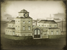
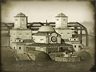

Requires
- Buildings: 
- Arts:

Enables
- Buildings: 
Basic Building Statistics (can be modified by difficulty level, arts, skills, traits and retainers)
- Cost: 5000
- +460 to wealth generated by trade in this province
- +8 per turn to town growth from trade within this province
- Enables railways
- -1 to happiness from modernisation
Clan Effects
- +2 to modernisation (clan development)
Description
Wires and rails bind a country together.
The telegraph and railway are the height of modernity: a journey of days or weeks becomes a matter of moments for a message, or hours for an army. Goods can be swiftly transported to new markets, giving tremendous opportunities for growth. Even before the Meiji Restoration, the Satsuma domain and the Tokugawa Shogunate considered building railways. When work did start under Meiji orders, it was British engineers who got the rail-building contracts. Given Japan's mountainous landscape, the decision to build a narrow gauge (3 feet 6 inches) railway system was probably a sensible one, as this allows for much tighter curves. Shipments of rails and rolling stock also seem to have been diverted from a line in New Zealand to Japan. Narrow gauge locos are also a good deal smaller than standard gauge ones, and therefore easier to offload from ships and manhandle! Other than the modern "Bullet Trains", today's fearsomely efficient Japanese railways continue to use this narrower gauge. The telegraph, incidentally, was vital to the safe running of a railway because it could send warnings along the line that a train was coming. Among other dangerous practices, it had been usual to send trains off at the appointed time whether or not the line ahead was clear. All telegraph messages had to be sent in "romaji", a version of Japanese written down using the English alphabet. Morse code already allowed for sending English letters, so there was no need to develop new morse codings specifically for the symbols of written Japanese.